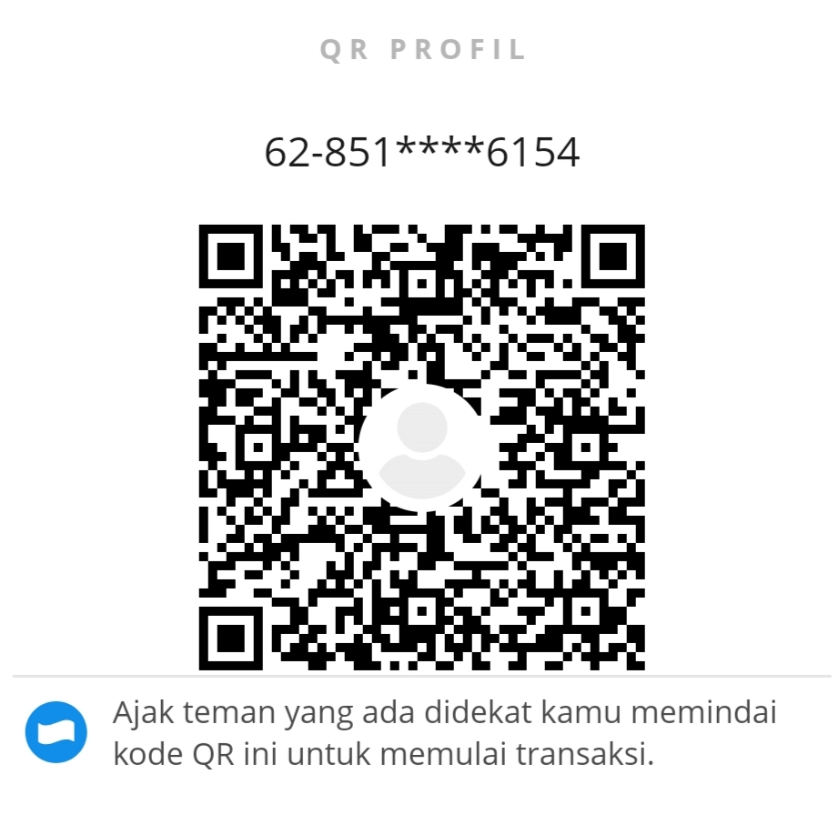

Keranjang belanja masih kosong.
Silakan Transfer / Scan QR di Bawah:
GoPay / DANA / OVO: 0851-5611-6154
(Atau scan gambar QRIS toko di bawah ini)

*Kirim bukti transfer via WhatsApp setelah checkout.